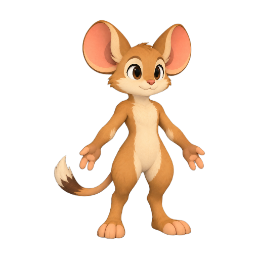
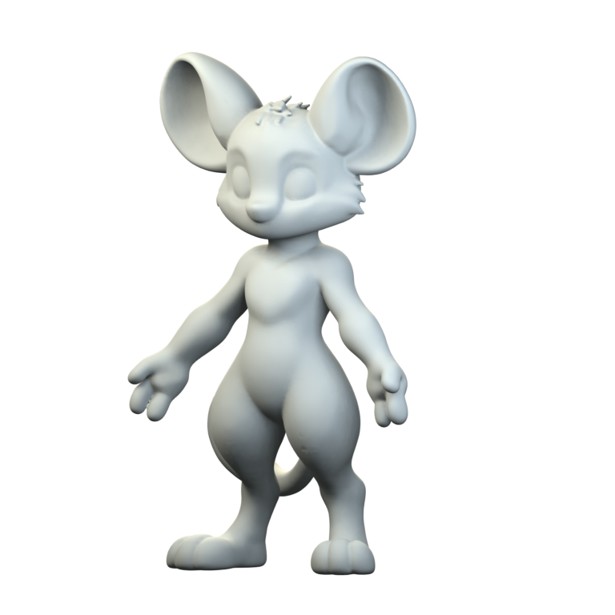
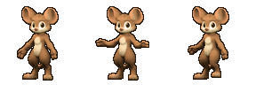
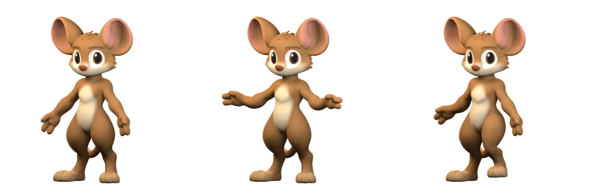

Zebes / Storybook direction / Neutral study 01
A new character mesh
The first 3D head and body in the chosen storybook direction. Compare the modeling reference with the actual clay geometry and the same mesh with simple study colors.
Modeling reference2D input
Clay geometryActual 3D render
The colors are authored placeholders baked into a texture. This is a neutral shape and body-deformation study: the hands, hair tufts and facial topology still need cleanup. The temporary rig has no facial or finger controls, and the three poses are not a finished run cycle.
Inspect the head
Sprite-size checks
Neutral · Raised arms · Bent leg. All use one camera, scale and mesh. The sprite images are reduced from the retained renders with one shared palette.
